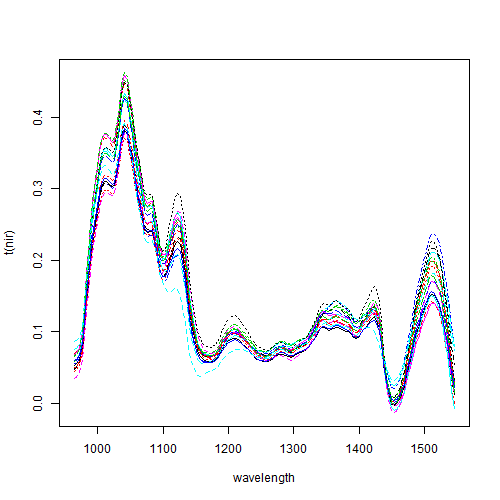
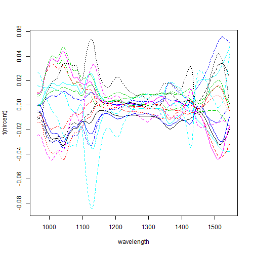
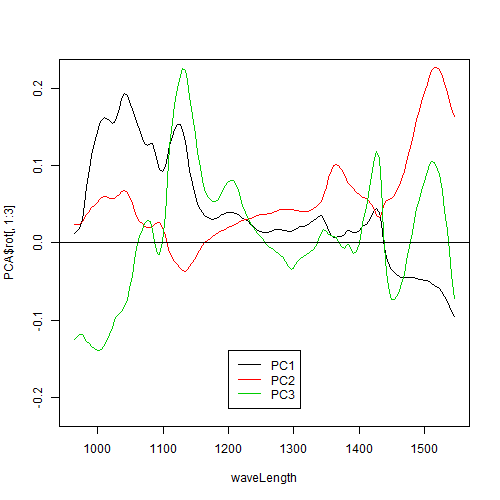
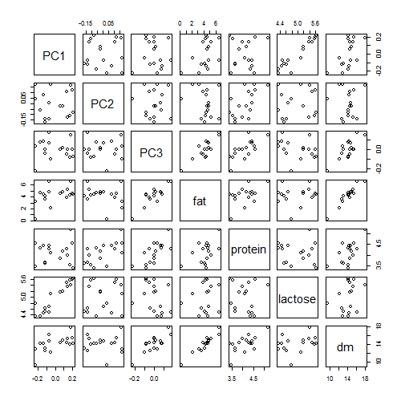

[1] "2012-06-14 22:26:17"
> data(NIRmilk, package = "doBy")
> dim(NIRmilk)
[1] 17 158
> head(round(NIRmilk[, c(1:6, 152:158)], 3))
sample X964 X968 X972 X976 X979 X1542 X1546 X1550 fat protein lactose
1 1 0.054 0.056 0.061 0.078 0.109 0.034 0.012 -0.008 4.168 3.639 4.530
2 2 0.069 0.071 0.078 0.098 0.135 0.022 0.000 -0.020 4.227 3.549 5.564
3 3 0.068 0.070 0.077 0.099 0.136 0.059 0.033 0.010 3.904 4.299 5.490
4 4 0.055 0.057 0.062 0.080 0.110 0.108 0.082 0.060 3.162 4.547 4.356
5 5 0.075 0.077 0.082 0.101 0.135 0.101 0.080 0.061 2.144 4.108 5.104
6 6 0.069 0.071 0.077 0.099 0.136 0.037 0.015 -0.004 4.352 3.413 5.626
dm
1 13.067
2 14.063
3 14.470
4 12.893
5 12.127
6 14.177
> nir <- NIRmilk[, 2:153]
> waveLength <- gsub("\\.", "", (gsub("X", "", names(nir))))
> matplot(waveLength, t(nir), type = "l", xlab = "wavelength")

> nircent <- scale(nir, center = TRUE, scale = FALSE)
> matplot(waveLength, t(nircent), type = "l", xlab = "wavelength")

> PCA <- prcomp(nircent)
> summary(PCA)
Importance of components:
PC1 PC2 PC3 PC4 PC5 PC6 PC7
Standard deviation 0.1575 0.1202 0.09539 0.02046 0.004769 0.003699 0.002117
Proportion of Variance 0.5081 0.2959 0.18641 0.00858 0.000470 0.000280 0.000090
Cumulative Proportion 0.5081 0.8040 0.99043 0.99900 0.999470 0.999750 0.999840
PC8 PC9 PC10 PC11 PC12 PC13
Standard deviation 0.00174 0.001176 0.001104 0.0008254 0.0007399 0.0005534
Proportion of Variance 0.00006 0.000030 0.000020 0.0000100 0.0000100 0.0000100
Cumulative Proportion 0.99990 0.999930 0.999960 0.9999700 0.9999800 0.9999900
PC14 PC15 PC16 PC17
Standard deviation 0.0005226 0.0004632 0.0004033 1.092e-17
Proportion of Variance 0.0000100 0.0000000 0.0000000 0.000e+00
Cumulative Proportion 0.9999900 1.0000000 1.0000000 1.000e+00
> matplot(waveLength, PCA$rot[, 1:3], type = "l", col = 1:3, lty = 1,
> ylim = c(-0.22, 0.22))
> abline(h = 0)
> library(gplots)
> smartlegend("center", "bottom", legend = c("PC1", "PC2", "PC3"),
> col = c(1:3), lty = c(1, 1, 1))

> nirnew <- cbind(PCA$x[, 1:3], NIRmilk[, 155:158])
> head(nirnew)
PC1 PC2 PC3 fat protein lactose dm
1 -0.11594522 -0.17025096 -0.004671534 4.1683 3.6390 4.5300 13.0667
2 0.17489004 -0.11226120 -0.084292848 4.2273 3.5490 5.5643 14.0633
3 0.13820007 0.11101555 -0.047871832 3.9040 4.2993 5.4897 14.4700
4 -0.22655731 0.17527552 0.033194764 3.1617 4.5467 4.3560 12.8933
5 -0.05103537 0.17342919 -0.099546952 2.1443 4.1083 5.1037 12.1267
6 0.21445607 -0.08096041 -0.080089550 4.3520 3.4133 5.6257 14.1767
> pairs(nirnew)

> m1 <- lm(fat ~ PC1 + PC2 + PC3, data = nirnew)
> summary(m1)
Call:
lm(formula = fat ~ PC1 + PC2 + PC3, data = nirnew)
Residuals:
Min 1Q Median 3Q Max
-0.084584 -0.026316 -0.006242 0.034143 0.061544
Coefficients:
Estimate Std. Error t value Pr(>|t|)
(Intercept) 4.24592 0.01111 382.05 < 2e-16 ***
PC1 4.32000 0.07274 59.39 < 2e-16 ***
PC2 -3.07567 0.09532 -32.27 8.53e-14 ***
PC3 13.27432 0.12009 110.54 < 2e-16 ***
---
Signif. codes: 0 ‘***’ 0.001 ‘**’ 0.01 ‘*’ 0.05 ‘.’ 0.1 ‘ ’ 1
Residual standard error: 0.04582 on 13 degrees of freedom
Multiple R-squared: 0.9992, Adjusted R-squared: 0.999
F-statistic: 5596 on 3 and 13 DF, p-value: < 2.2e-16